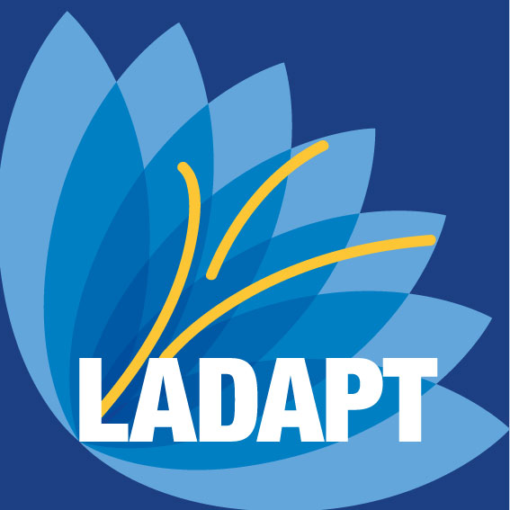
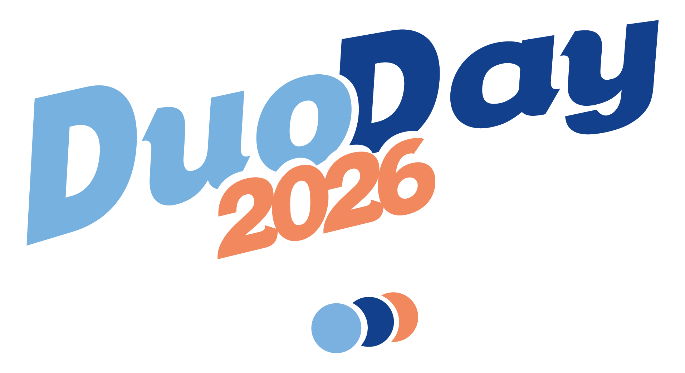

19 Novembre 2026 · 10h00 – 17h00
Une journée structurée autour de 5 espaces thématiques, animée par des experts engagés pour l'inclusion numérique en Normandie
Nos experts
Des professionnels engagés, issus du territoire normand et au-delà, réunis pour partager leur expertise et leurs expériences.
Après 10 ans comme chargée de mission en politique de la ville, Sandrine rejoint en 2022 la Préfecture de l'Eure pour coordonner le déploiement des espaces France Services dans le département. Elle pilote les actions d'inclusion numérique à destination des publics éloignés du numérique : seniors, personnes en situation de précarité, habitants des zones rurales.
Co-fondateur de l'association Clic & Lien à Évreux, Karim a formé plus de 400 personnes au numérique depuis 2019. Développeur de métier, il consacre une partie de son temps à des ateliers accessibles en bibliothèques, médiathèques et centres sociaux. Il est convaincu que la pédagogie bienveillante est la clé pour lever les peurs face au numérique.
Maîtresse de conférences en informatique à l'Université de Caen, Nadia mène des recherches sur l'IA éthique et les technologies d'assistance. Elle dirige le projet AccessIA, lauréat d'un appel à projets européen Horizon, qui développe des outils d'IA pour améliorer l'autonomie des personnes en situation de handicap. Elle a publié plus de 30 articles dans des revues internationales sur ces sujets.
Ancien analyste en sécurité informatique pour une grande banque française, Thomas a pris sa retraite anticipée pour se consacrer à la médiation numérique. Il intervient bénévolement dans les médiathèques et les maisons de retraite pour sensibiliser les seniors aux risques du numérique. Son approche pédagogique et patiente en fait un formateur très apprécié.
Directrice régionale de LADAPT Normandie depuis 2018, Isabelle pilote un réseau de 6 établissements et services dédiés à l'accompagnement des personnes handicapées dans leur vie professionnelle et sociale. Diplômée en sciences sociales, elle travaille activement à l'intégration du numérique comme outil d'autonomisation des personnes accompagnées par LADAPT.
Médiateur numérique depuis 2017, Marc coordonne un réseau de 14 espaces France Services dans le département de l'Eure. Il accompagne chaque semaine des dizaines de personnes dans leurs démarches administratives en ligne : déclarations, allocations, cartes Vitale, permis de conduire... Il est le visage de la médiation numérique de terrain dans le département.
DRH depuis 7 ans chez NormaTech Industries, une PME industrielle d'Évreux, Élodie a transformé la politique RH de son entreprise pour en faire un modèle d'inclusion dans la région. En 2024, elle a obtenu le label GEEIS-SDG et a intégré DuoDay dans le parcours d'intégration.
Julien anime depuis 2021 la chaîne YouTube "TechSansFrontières" dédiée à rendre le numérique accessible à tous. Sous-titres, langue des signes, explications ultra-claires : ses tutoriels dépassent le million de vues. Ancien agent France Travail reconverti en créateur de contenu, il sait parler à des publics très divers avec humour et bienveillance.
Ils nous soutiennent
Eure Tech & Inclusion existe grâce à l'engagement de structures publiques, associatives et privées qui partagent nos valeurs d'inclusion numérique.


Boîte à outils
Guides, fiches pratiques et liens utiles pour aller plus loin après la journée. Tous les contenus sont gratuits et librement partageables.
Vous avez des questions ?
Tout ce que vous devez savoir avant de rejoindre Eure Tech & Inclusion 2026.
C'est simple et gratuit ! Rendez-vous sur discord.com ou téléchargez l'application sur votre smartphone. Créez un compte avec votre adresse e-mail, puis cliquez sur notre lien d'invitation : discord.gg/yHCAgYKwk. Vous rejoindrez directement le serveur À l'Eure Digitale. Une fiche guide illustrée est disponible dans les ressources ci-dessus.
Non, aucune inscription formelle n'est requise. Il vous suffit de rejoindre notre serveur Discord avant le 19 novembre. L'événement est 100% gratuit et ouvert à tous, sans condition de niveau ou de profil. Pour être tenu·e informé·e des dernières annonces, nous vous conseillons tout de même de rejoindre le serveur à l'avance.
Oui ! Les conférences et tables rondes seront enregistrées et mises à disposition sur notre chaîne YouTube et dans un salon dédié sur Discord dans les jours suivant l'événement. Les ateliers pratiques, en revanche, ne seront pas diffusés en replay pour préserver l'interactivité et la bienveillance des échanges.
Un ordinateur, une tablette ou un smartphone avec une connexion Internet suffisent. Discord fonctionne sur tous les appareils. Pour les ateliers pratiques, un micro est recommandé pour pouvoir interagir, mais vous pouvez aussi participer en mode silencieux et poser vos questions par écrit dans le chat.
L'accessibilité est au cœur de notre démarche. Les conférences disposeront de sous-titres automatiques, et nous ferons notre possible pour adapter les ateliers à chaque besoin. Si vous avez une demande d'accessibilité spécifique (LSF, audiodescription, etc.), contactez-nous sur Discord avant l'événement et nous ferons notre mieux pour y répondre.
Rendez-vous sur la page Agenda du site principal pour télécharger un fichier .ics compatible avec tous les calendriers (Google Calendar, Outlook, Apple Calendar…). Vous pouvez aussi activer les rappels dans Discord : l'événement sera annoncé dans le salon #annonces la veille et le matin du 19 novembre.
Absolument ! Nous sommes toujours à la recherche de bénévoles et d'intervenants engagés. Si vous avez une expertise à partager en lien avec le numérique inclusif, l'accessibilité, l'emploi ou la médiation numérique, contactez-nous via le formulaire "Proposer un atelier" sur le site principal ou directement sur Discord.
L'événement est 100% gratuit et accessible à tous les niveaux.
Rejoindre le serveur Discord